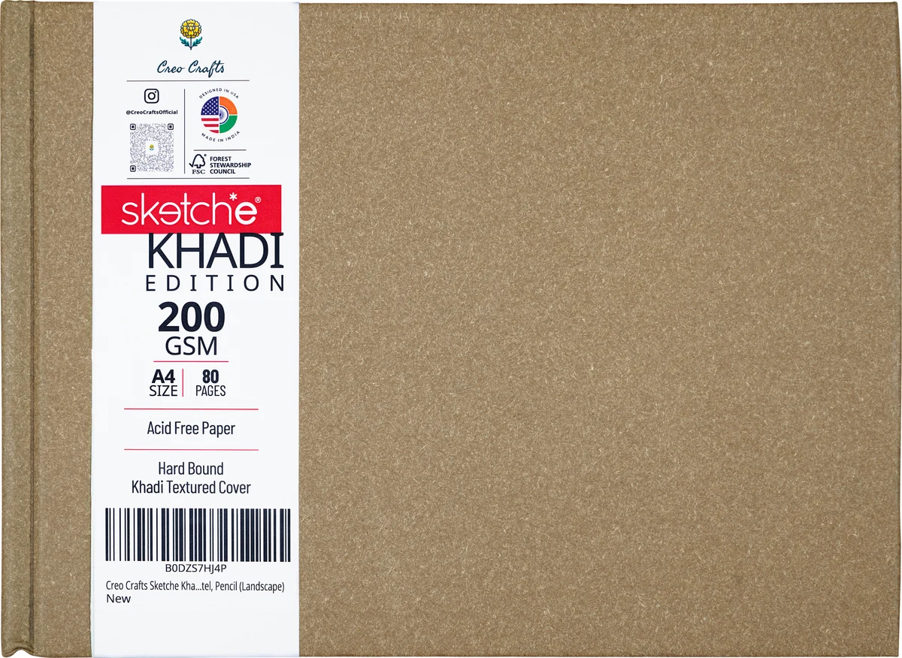

Best seller

01
A4 Landscape · 11.7 × 8.3 in
Khadi Hardcover Sketchbook
A khadi-textured cover over rigid board, and paper heavy enough to take a wash.
- 200 GSM acid-free cartridge paper
- 80 pages / 40 sheets
- Hard bound, khadi-textured cover
- Opens flat
- Pencil, ink, charcoal, marker, light watercolour